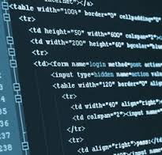

//Animators

Animators work in teams to develop movies, visual effects, or electronic games.
They create their work by using computer software or by writing their own computer code.
Each animators works on a portion of the project, and then all the animation put the pieces together to create one cohesive animation.
- Design complex graphic and animation, using independent judgment, and computer equipment.
- Participate in design and production of multimedia campaigns, handling budgeting and scheduling, and assisting with such responsibilities as production coordination, background design and progress tracking.
- Make objects or characters appear lifelike by manipulating light, color, texture, shadow, and transparency, or manipulating static images to give the illusion of motion.
- Create two-dimensional and three-dimensional images depicting objects in motion or illustrating a process, using computer animation or modeling programs.
- Develop briefings, brochures, multimedia presentations, web pages, promotional products, technical illustrations, and computer artwork for use in products, technical manuals, literature, newsletters and slide shows.
- Artistic talent. Animators should have Artistic ability and a good understanding of colour, texture, and light. However, They may be able to compensate for Artistic shortcomings with better technical skills.
- Communication skills. Animators need to work as part of a complex team and respond well to criticism and feedback.
- Computer skills. many Animators use Computer programs or write programming code to do most of their work. those with Artistic talent, However, may be able to find work that does not require strong Computer skills.
- Creativity. Animators must be able to think creatively to develop original ideas and make them come to life.
- Time-management skills. the hours required by most studio and game design companies are long, particularly When there are tight deadlines. Animators need to be able to manage their time When a deadline approaches.
- A university degree in visual arts with specialization in graphic design, commercial art, graphic communications or cartooning or completion of a college diploma program in graphic arts is required.
- Experience or training in multimedia design at a post-secondary, college or technical institution may be required.
- In addition to the arts, training in biology, engineering, architecture or a scientific field is usually required for medical, technical and scientific illustrators.
- Creative ability and artistic talent, as demonstrated by a portfolio of work, are required for graphic designers and illustrators.
-
In Heritage College - NewMedia and Publication Design program.
-
In Simon Fraser University - Interactive Arts & Technology program.
-
In Capilano University - 3D Animation for Film and Games program.
//Computer Hardware Enginerr

Computer hardware engineers research, design, develop, and test computer systems and components such as processors, circuit boards, memory devices, networks, and routers. By creating new designs in computer hardware, these engineers create rapid advances in computer technology. Many computer hardware engineers design non-computer devices that incorporate processors and other computer components and connect to the Internet. For example, there are many car parts with computer systems embedded in them. A growing number of medical devices are also designed by computer hardware engineers with a computer system and the ability to connect to the Internet.
- Write documents that keeps track of the hardware development process and supports hardware introduction.
- Build, test, and modify product prototypes using working models or theoretical models constructed with computer simulation.
- Update knowledge and skills to keep up with rapid advancements in computer technology.
- Direct technicians, engineering designers or other technical support personnel as needed.
- Test and verify hardware and support peripherals to ensure that they meet specifications and requirements, by recording and analyzing test data.
- Analytical skills. Computer hardware engineers analyze complex equipment to determine the best way to improve it.
- Creativity. Computer hardware engineers design new types of information technology devices.
- Critical-thinking skills. These engineers use logic and reasoning to clarify goals, examine assumptions, and identify the strengths and weaknesses of alternative solutions to problems.
- Problem-solving skills. Computer hardware engineers identify complex problems in computer hardware, develop and evaluate possible solutions, and figure out the best way to implement them.
- Computer engineers require a bachelor's degree in computer engineering, electrical or electronics engineering, engineering physics or computer science.
- A master's or doctoral degree in a related engineering discipline may be required.
- Licensing by a provincial or territorial association of professional engineers is required to approve engineering drawings and reports and to practise as a Professional Engineer
- Engineers are eligible for registration following graduation from an accredited educational program, three or four years of supervised work experience in engineering and passing a professional practice examination.
-
In McMaster University - Engineering and Society.
-
In University of Manitoba - Electrical Engineering.
-
In Confederation College - Electronics Engineering Technician - Computers.
//Computer programing

Computer programmers write code to create software programs. This entails initially planning the software, creating models and flowcharts detailing how the code is to be written, writing and debugging code, and designing an application or systems interface.
- Write, analyze, review, and rewrite programs, using workflow chart and diagram, and applying knowledge of computer capabilities.
- Conduct trial runs of programs and software applications to be sure they will produce the desired information and that the instructions are correct.
- Correct errors by making appropriate changes and rechecking the program to ensure that the desired results are produced.
- Perform or direct revision, repair, or expansion of existing programs to increase operating efficiency or adapt to new requirements.
- Analytical skills. Computer programmers must understand complex instructions in order to create computer code
- Concentration. Programmers must be able to work at a computer writing lines of code for long periods of time.
- Detail oriented. Computer programmers must closely examine the code they write because a small mistake can affect the entire computer program.
- Troubleshooting skills. An important part of a programmer’s job is to check the code for errors and fix any they find.
- A bachelor's degree in computer science or in another discipline with a significant programming component or completion of a college program in computer science is usually required.
- Specialization in programming for engineering and scientific applications requires specific post-secondary study or experience.
-
In CDI College - Network Systems Engineer program.
-
In Dawson College - Computer Science Technology program.
-
.png) In McMaster University - Computer Science (Optional Co-op) program.
In McMaster University - Computer Science (Optional Co-op) program.